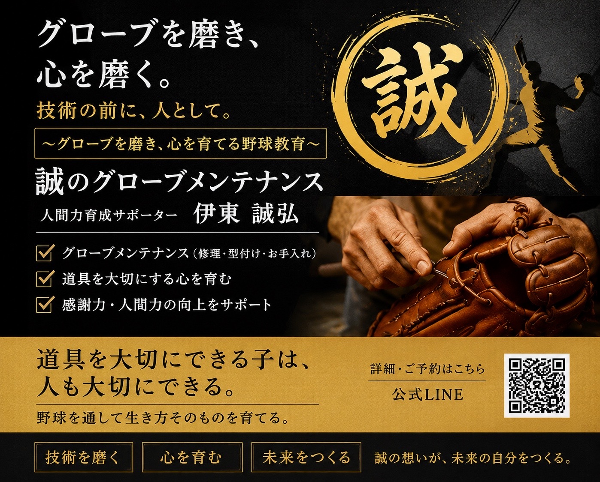

👨🔧 講師紹介

野球グローブメンテナンス×人間力育成サポーター
伊東 誠弘 （いとう あきひろ）
「グローブを磨くことは、単に綺麗にすることではありません。支えてくれる家族、戦う仲間、野球ができる環境という、見えない大切な存在を見つめ直す時間です。」
私はグローブを直す人ではなく、グローブを通じて人を育てる人です。当日は、子どもたちがワクワクしながら道具を大切にする気持ちを持てるよう、楽しくお話しさせていただきます！一緒にお話しできるのを楽しみにしています。
✨ ほーむBASE 〜こころの根っこ〜 特別講演 ✨
心も技術も、大事なものはぜ〜んぶグローブの中！⚾️野球好きのためのオンライン特別講座
〜 道具を大切にできる子は、
人も大切にできる 〜
たった60分で、お子様の「野球との向き合い方」が変わる！
楽しくグローブのお手入れを学びながら、感謝の心を育みます。

「試合や練習から帰ってきても、グローブをカバンに入れっぱなし…」
「上手くいかないと、すぐ道具や周りの環境のせいにしてしまう💦」
「ヒットを打つことだけでなく、野球を通して人間的に成長してほしい🌱」
「他のクラブの子たちはどんな風に練習してる？色々聞いてみたい！」
そのお悩み、「グローブのお手入れ」で解決できるかもしれません！
ただ汚れを落とすだけじゃない。心を磨く特別な時間です。
自分の道具を大切にできる子は、チームメイトも大切にできます。
言われる前に自分で管理する。
一生モノの習慣が身につきます。
牛の命、職人さん、買ってくれた親。
背景にあるストーリーへの感謝を学びます。
グローブを磨きながら自分と向き合い、
心を整えるメンタルトレーニングです。
「今日磨いた？」道具をきっかけに、
家族のコミュニケーションが深まります。
講座の後半では、参加者みんなで楽しくお話しする時間を設けます！
「うちのチームはこうしてるよ！」「これってどうしたらいいの？」など、
保護者同士や子ども同士、指導者の方も交えてワイワイ情報交換しましょう！
野球グローブメンテナンス×人間力育成サポーター
「グローブを磨くことは、単に綺麗にすることではありません。支えてくれる家族、戦う仲間、野球ができる環境という、見えない大切な存在を見つめ直す時間です。」
私はグローブを直す人ではなく、グローブを通じて人を育てる人です。当日は、子どもたちがワクワクしながら道具を大切にする気持ちを持てるよう、楽しくお話しさせていただきます！一緒にお話しできるのを楽しみにしています。

未来志創プロジェクト代表
富山西部ベースボールクラブ代表
オンライン寺子屋「ほーむBASE」主宰
元富山市公立中学校教師。素質論を活用した子育て伴走サポートや志教育を展開。中学野球クラブ・富山西部ベースボールクラブの代表も務める。一人一人が自分らしさをイキイキと輝かせられる人生を増やすことをミッションに活動中。
当日は皆様とお会いできるのを楽しみにしています！